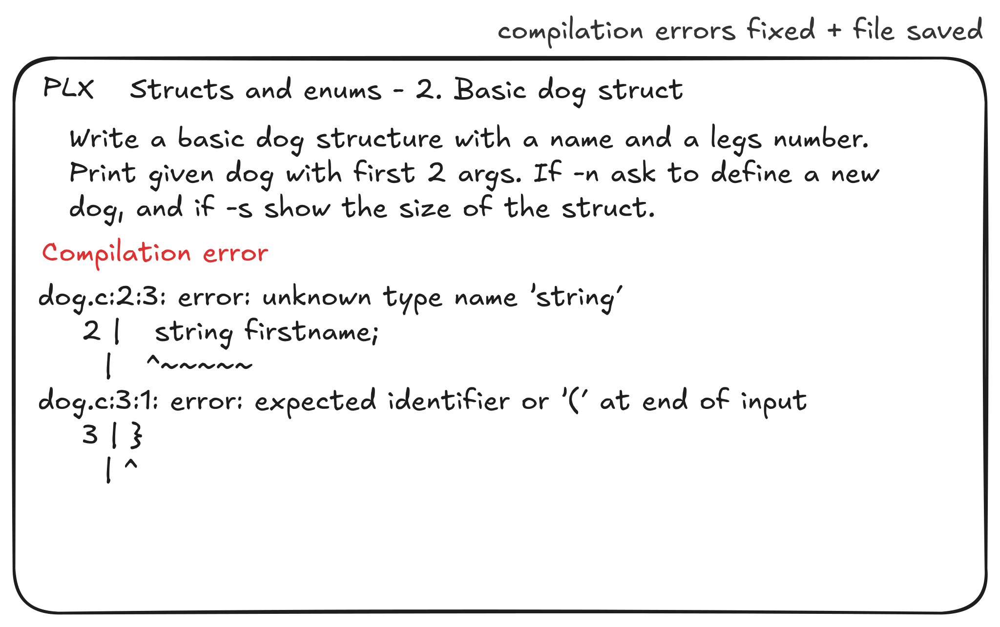

<!DOCTYPE HTML>
<html lang="en" class="sidebar-visible no-js oranda-dark">
    <head>
        <!-- Book generated using mdBook -->
        <meta charset="UTF-8">
        <title>PLX docs</title>
        <meta name="robots" content="noindex" />


        <!-- Custom HTML head -->
        
        <meta name="description" content="The documentation includes how to install, use and develop PLX.">
        <meta name="viewport" content="width=device-width, initial-scale=1">
        <meta name="theme-color" content="#ffffff" />

        <link rel="icon" href="favicon.svg">
        <link rel="shortcut icon" href="favicon.png">
        <link rel="stylesheet" href="css/variables.css">
        <link rel="stylesheet" href="css/general.css">
        <link rel="stylesheet" href="css/chrome.css">
        <link rel="stylesheet" href="css/print.css" media="print">

        <!-- Fonts -->
        <link rel="stylesheet" href="FontAwesome/css/font-awesome.css">
        <link rel="stylesheet" href="fonts/fonts.css">

        <!-- Highlight.js Stylesheets -->
        <link rel="stylesheet" href="highlight.css">
        <link rel="stylesheet" href="tomorrow-night.css">
        <link rel="stylesheet" href="ayu-highlight.css">
        <link rel="stylesheet" href="oranda-highlight.css">

        <!-- Custom theme stylesheets -->
        <link rel="stylesheet" href="book.css">

    </head>
    <body>
    <div id="body-container">
        <!-- Provide site root to javascript -->
        <script>
            var path_to_root = "";
            var default_theme = window.matchMedia("(prefers-color-scheme: dark)").matches ? "oranda-dark" : "oranda-dark";
        </script>

        <!-- Work around some values being stored in localStorage wrapped in quotes -->
        <script>
            try {
                var theme = localStorage.getItem('orandamdbook-theme');
                var sidebar = localStorage.getItem('mdbook-sidebar');

                if (theme.startsWith('"') && theme.endsWith('"')) {
                    localStorage.setItem('orandamdbook-theme', theme.slice(1, theme.length - 1));
                }

                if (sidebar.startsWith('"') && sidebar.endsWith('"')) {
                    localStorage.setItem('mdbook-sidebar', sidebar.slice(1, sidebar.length - 1));
                }
            } catch (e) { }
        </script>

        <!-- Set the theme before any content is loaded, prevents flash -->
        <script>
            var theme;
            try { theme = localStorage.getItem('orandamdbook-theme'); } catch(e) { }
            if (theme === null || theme === undefined) { theme = default_theme; }
            var html = document.querySelector('html');
            html.classList.remove('no-js')
            html.classList.remove('oranda-dark')
            html.classList.add(theme);
            html.classList.add('js');
        </script>

        <!-- Hide / unhide sidebar before it is displayed -->
        <script>
            var html = document.querySelector('html');
            var sidebar = 'hidden';
            if (document.body.clientWidth >= 1080) {
                try { sidebar = localStorage.getItem('mdbook-sidebar'); } catch(e) { }
                sidebar = sidebar || 'visible';
            }
            html.classList.remove('sidebar-visible');
            html.classList.add("sidebar-" + sidebar);
        </script>

        <nav id="sidebar" class="sidebar" aria-label="Table of contents">
            <div class="sidebar-scrollbox">
                <ol class="chapter"><li class="chapter-item expanded "><a href="install.html"><strong aria-hidden="true">1.</strong> Installation</a></li><li class="chapter-item expanded "><a href="why.html"><strong aria-hidden="true">2.</strong> Why?</a></li><li class="chapter-item expanded "><a href="CHANGELOG.html"><strong aria-hidden="true">3.</strong> Changelog</a></li><li class="chapter-item expanded "><a href="report.html"><strong aria-hidden="true">4.</strong> PDG-Report</a></li><li><ol class="section"><li class="chapter-item expanded "><a href="project-description.html"><strong aria-hidden="true">4.1.</strong> Project-description</a></li><li class="chapter-item expanded "><a href="architecture.html"><strong aria-hidden="true">4.2.</strong> Architecture</a></li><li class="chapter-item expanded "><a href="mokups.html"><strong aria-hidden="true">4.3.</strong> Mockups</a></li><li class="chapter-item expanded "><a href="landing-page.html"><strong aria-hidden="true">4.4.</strong> Landing page</a></li><li class="chapter-item expanded "><a href="technical-choice.html"><strong aria-hidden="true">4.5.</strong> Technical choice</a></li><li class="chapter-item expanded "><a href="work-process.html"><strong aria-hidden="true">4.6.</strong> Work process</a></li><li class="chapter-item expanded "><a href="pipeline-ci-cd.html"><strong aria-hidden="true">4.7.</strong> Pipeline CI/CD</a></li></ol></li><li class="chapter-item expanded "><a href="features.html"><strong aria-hidden="true">5.</strong> Features development</a></li><li class="chapter-item expanded "><a href="teachers.html"><strong aria-hidden="true">6.</strong> Experience for teachers</a></li><li class="chapter-item expanded "><a href="dev.html"><strong aria-hidden="true">7.</strong> Development</a></li><li class="chapter-item expanded "><a href="contribution.html"><strong aria-hidden="true">8.</strong> Contribution guide</a></li><li class="chapter-item expanded "><a href="design.html"><strong aria-hidden="true">9.</strong> Design</a></li><li><ol class="section"><li class="chapter-item expanded "><a href="exos.html"><strong aria-hidden="true">9.1.</strong> Exos management</a></li><li class="chapter-item expanded "><a href="build.html"><strong aria-hidden="true">9.2.</strong> Build system</a></li></ol></li><li class="chapter-item expanded "><a href="../../index.html"><strong aria-hidden="true">10.</strong> Return to the Home page</a></li></ol>
            </div>
            <div id="sidebar-resize-handle" class="sidebar-resize-handle"></div>
        </nav>

        <div id="page-wrapper" class="page-wrapper">

            <div class="page">
                                <div id="menu-bar-hover-placeholder"></div>
                <div id="menu-bar" class="menu-bar sticky bordered">
                    <div class="left-buttons">
                        <button id="sidebar-toggle" class="icon-button" type="button" title="Toggle Table of Contents" aria-label="Toggle Table of Contents" aria-controls="sidebar">
                            <i class="fa fa-bars"></i>
                        </button>
                        <button id="theme-toggle" class="icon-button" type="button" title="Change theme" aria-label="Change theme" aria-haspopup="true" aria-expanded="false" aria-controls="theme-list">
                            <i class="fa fa-paint-brush"></i>
                        </button>
                        <ul id="theme-list" class="theme-popup" aria-label="Themes" role="menu">
                            <li role="none"><button role="menuitem" class="theme" id="light">Light</button></li>
                            <li role="none"><button role="menuitem" class="theme" id="rust">Rust</button></li>
                            <li role="none"><button role="menuitem" class="theme" id="coal">Coal</button></li>
                            <li role="none"><button role="menuitem" class="theme" id="navy">Navy</button></li>
                            <li role="none"><button role="menuitem" class="theme" id="ayu">Ayu</button></li>
                            <li role="none"><button role="menuitem" class="theme" id="oranda-dark">Oranda Dark</button></li>
                            <li role="none"><button role="menuitem" class="theme" id="oranda-light">Oranda Light</button></li>

                        </ul>
                        <button id="search-toggle" class="icon-button" type="button" title="Search. (Shortkey: s)" aria-label="Toggle Searchbar" aria-expanded="false" aria-keyshortcuts="S" aria-controls="searchbar">
                            <i class="fa fa-search"></i>
                        </button>
                    </div>

                    <h1 class="menu-title">PLX docs</h1>

                    <div class="right-buttons">
                        <a href="print.html" title="Print this book" aria-label="Print this book">
                            <i id="print-button" class="fa fa-print"></i>
                        </a>

                    </div>
                </div>

                <div id="search-wrapper" class="hidden">
                    <form id="searchbar-outer" class="searchbar-outer">
                        <input type="search" id="searchbar" name="searchbar" placeholder="Search this book ..." aria-controls="searchresults-outer" aria-describedby="searchresults-header">
                    </form>
                    <div id="searchresults-outer" class="searchresults-outer hidden">
                        <div id="searchresults-header" class="searchresults-header"></div>
                        <ul id="searchresults">
                        </ul>
                    </div>
                </div>

                <!-- Apply ARIA attributes after the sidebar and the sidebar toggle button are added to the DOM -->
                <script>
                    document.getElementById('sidebar-toggle').setAttribute('aria-expanded', sidebar === 'visible');
                    document.getElementById('sidebar').setAttribute('aria-hidden', sidebar !== 'visible');
                    Array.from(document.querySelectorAll('#sidebar a')).forEach(function(link) {
                        link.setAttribute('tabIndex', sidebar === 'visible' ? 0 : -1);
                    });
                </script>

                <div id="content" class="content">
                    <main>
                        <h1 id="installation-instructions"><a class="header" href="#installation-instructions">Installation instructions</a></h1>
<h2 id="prerequisites"><a class="header" href="#prerequisites">Prerequisites</a></h2>
<ol>
<li>
<p>Install the Rust toolchain via <code>rustup</code> on <a href="https://rustup.rs/">rustup.rs</a>, so you have the package manager cargo and the necessary tools to compile plx from the <code>crates.io</code> package.</p>
</li>
<li>
<p>C or C++: standard build tools for C/C++, (gcc and g++)</p>
</li>
<li>
<p>Configure <code>$EDITOR</code> environment variable to define your IDE. This way PLX can auto start your IDE</p>
<ol>
<li>Currently, we only support <code>code</code>, <code>codium</code>, <code>idea</code>.
<ol>
<li>For now this feature is unstable for terminal based editors. Feel free to create a new issue if you do not see your favorite IDE here.</li>
</ol>
</li>
<li>On Mac and Linux you should change your shell configuration (<code>~/.bashrc</code> for ex.) with a line like <code>export EDITOR=&lt;ide&gt;</code></li>
<li>On Windows <code>setx /m EDITOR &lt;ide&gt;</code> (check it worked you can run <code>echo %EDITOR%</code> in a new terminal)</li>
<li>If it doesn't work, make sure to reload your shell</li>
<li>When you enter an exo your <code>$EDITOR</code> will automatically open the correct file</li>
</ol>
</li>
</ol>
<h2 id="installation-for-students-and-teachers"><a class="header" href="#installation-for-students-and-teachers">Installation for students and teachers</a></h2>
<p>We do not provide binaries for the project so you have to compile it yourself but it is easy via cargo.</p>
<p>To install PLX without cloning the repository, you can install and compile it from <code>crates.io</code> with</p>
<pre><code class="language-sh">cargo install plx
</code></pre>
<p>And then just run the <code>plx</code> command in your terminal. (If it is not found make sure you restart your terminal or check if <code>~/.cargo/bin/</code> is in your $PATH).</p>
<p><strong>Note: we might provide binaries later for ease of installation, it is not a priority right now.</strong></p>
<div style="break-before: page; page-break-before: always;"></div><h1 id="why-"><a class="header" href="#why-">Why ?</a></h1>
<blockquote>
<p><em>The age of features is over, we are living in the age of experiences.</em><br />
Aral Balkan, <a href="https://small-tech.org/videos/ux-talk/">during a UX conference titled "Superheroes &amp; Villains in Design"</a>.</p>
</blockquote>
<p>Ce n'est pas juste un projet stylé parce que le Rust c'est hype, qu'il y a un mode watch super réactif, un feedback riche... <strong>on développe une nouvelle expérience d'apprentissage pour s'approcher de la pratique délibérée en informatique !!</strong></p>
<h2 id="pourquoi"><a class="header" href="#pourquoi">Pourquoi</a></h2>
<p>Les exercices de code sont au coeur de l'apprentissage d'un language de programmation, cependant avoir des exercices avec des petits programmes ou fonctions à implémenter ne garantit pas que l'expérience de pratique sera efficiente. Selon la pratique délibérée, l'apprentissage profond passe par une boucle de feedback la plus courte possible, or l'expérience actuelle est loin d'être fluide et efficace.</p>
<p>Prenons l'exemple d'un exercice un <em>petit programme en C qui demande le prénom, nom et l'âge</em> et affiche une phrase incluant ces 2 valeurs. L'exo fourni dans un PDF, inclut une consigne, un bout de code de départ et un exemple d'exécution, ainsi qu'un code de solution sur la page suivante.<br />
Pour résoudre l'exercice, une fois la consigne lue, nous allons ouvrir un IDE, créer un fichier <code>main.c</code> manuellement, copier-coller le code de départ, lire le code existant et compléter les parties à développer.<br />
Une fois terminé, passons à la compilation en ouvrant un terminal dans l'IDE en tapant <code>gcc main main.c &amp; main</code>, euh zut c'était <code>gcc -o main main.c &amp;&amp; ./main</code>, on rentre prénom, nom et age, puis comparons l'output manuellement pour voir si c'est bien le résultat attendu, réouvrons la consigne et non il manque l'affichage de l'âge! Revenons au code, on ajoute l'âge et on relance le build et l'exécution, on rentre prénom, nom et âge à nouveau. Est-ce que l'output est bon cette fois ? Vérifions maintenant notre code avec la solution. Okay, on aurait pu utiliser <code>printf</code> au lieu de 2 fois <code>puts()</code> pour afficher le nom complet. Passons à l'exo suivant, cherchons sa consigne, la voilà, on recommence le cycle,...</p>
<p>Tous ces petites étapes supplémentaires autour de la rédaction du code semblent insignifiantes à première vue mais leur cumul résulte en une friction générale importante. En plus, il n'y aura que peu d'exécutions manuels c'est-à-dire très peu d'occasions de connaître la progression et d'ajuster son code au fur et à mesure, en plus d'une petite charge mentale pour compiler et lancer à la main.</p>
<p>Imaginons que dans un laboratoire de C <em>nous développions maintenant une bataille navale dans le terminal</em>. Tester de bout en bout de manière automatique un programme en C n'est pas une tâche évidente, en partie par manque d'outil adapté. Pour tester le fonctionnement global, il faut manuellement lancer une partie et jouer plusieurs coups pour vérifier le fonctionnement et vérifier à chaque étape si le jeu est cohérent dans son état et affichage. Une fois qu'une partie du jeu fonctionne, en développant le reste on risque de casser d'autres parties sans s'en rendre compte.</p>
<p>Un dernier cas concret, en <em>développant un petit shell en C++</em>, pour tester l'implémentation des pipes, il faudra compiler le shell ainsi que les CLIs accessibles, lancer le shell, puis taper quelques commandes du type <code>echo hey there | toupper</code> voir si l'output est bien <code>HEY THERE</code>, ce qui est très lent! Tester plein de plein de cas limites (plusieurs pipes, symbole de pipe collé, redirection stdout et non stderr, exit du CLI à droite du pipe, ...)</p>
<p>En résumé, le manque de validation automatisée ralentit le développement et l'apprentissage. Simplement ajouter des tests automatisés ne résoud pas tous les problèmes, car les tests runner ne sont pas adaptés à des tests sur des exos (pas de consigne, pas d'indices, affichage pas adapté, pas de mode watch, ...), il manque une partie d'automatisation autour. De plus, le travail d'écriture de tests pour des tous petits exos serait beaucoup trop conséquent, dans plein de cas comparer l'output avec une solution suffit à estimer si le programme est fonctionnel.</p>
<h2 id="expérience-plx"><a class="header" href="#expérience-plx">Expérience PLX</a></h2>
<p><strong>Le défi est d'arriver à réduire la friction au strict minimum, d'automatiser toutes les étapes administratives et de fournir un feedback riche, automatique et rapide durant l'entrainement.</strong></p>
<p>Cette expérience sera atteinte via</p>
<ol>
<li><strong>La suppression des étapes de compilation et d'exécution manuelles</strong><br />
Aucune connaissance du système de compilation ou de ses commandes n'est nécessaire, tout se fait automatiquement dès qu'un des fichiers est sauvé (il suffit donc de taper Ctrl+S ou d'attendre que l'IDE sauve automatiquement)</li>
<li><strong>La suppression de toutes les rédactions manuelles de valeurs dans le terminal</strong><br />
Permettre de définir des arguments du programme et un contenu à injecter en <code>stdin</code>, avec des variantes pour tester différents cas.</li>
<li><strong>La suppression des étapes de comparaison d'output</strong><br />
L'output sera automatiquement comparé et une diff précise (avec surlignage des différences sur chaque ligne) sera affichée pour voir immédiatemment les différences. La diff pourrait supporter du trimming de l'output ou des lignes afin d'ignorer certains espaces blancs insignifiants. Les retours à la ligne et tabulations seront affichées avec un symbole visible.</li>
<li><strong>Une affichage et comparaison avec solution</strong><br />
Une fois l'exo résolu, pouvoir auto évaluer sa réponse avec la solution d'un prof est déjà d'une grande aide. Il sera possible de voir une diff de sa réponse avec la solution directement dans PLX.</li>
<li><strong>Une transition fluide entre exos</strong><br />
Passer à l'exo suivant devrait prendre moins de 4 secondes, le temps de passer de l'IDE à PLX (Alt+Tab), d'un raccourci (n) dans PLX pour afficher l'exo suivant et le temps que l'IDE réagisse à la demande d'ouverture du fichier.</li>
<li><strong>Aucun changement de fenêtre durant l'exo</strong><br />
PLX à gauche avec toute la consigne, l'IDE à droite dans un seul fichier utile, une fois les 2 fenêtres ouvertes, il n'y a plus de changement à faire comme tout est déjà disponible. La consigne s'affiche dans PLX, dès que le fichier ouvert est sauvé, le build et l'exécution se relance. Les erreurs de build sont visibles ainsi que les résultats des tests.</li>
</ol>
<h2 id="contexte"><a class="header" href="#contexte">Contexte</a></h2>
<p>Ce projet tire inspiration de <a href="https://rustlings.cool/">Rustlings</a> qui permet de s'habituer aux erreurs du compilateur Rust en corrigeant des problèmes de compilation ou en complétant une centaine de petits exercices. Dans la même idée, d'autres languages ont suivis avec golings, cplings, ziglings, ... Ce même projet a inspirée <a href="https://github.com/samuelroland/prjs">PRJS</a> (Practice Runner for JavaScript), développée à l'occasion du dernier labo libre de WEB et qui permet de s'entrainer sur des fonctions vérifiées via des tests unitaires écrits et lancés avec Vitest en arrière plan.</p>
<p>PLX pousse encore plus loin l'expérience en supportant plusieurs languages, en y incluant la compilation automatique ainsi que le support de types de tests plus primitifs et plus simple à mettre en place qu'avec un framework de test.</p>
<p>Note: contrairement à Rustlings, ce repository ne contient pas d'exercices réels, seulement le code de la TUI PLX. Des exercices de démonstration seront écrits dans différents languages dans un sous dossier <code>examples</code>.</p>
<div style="break-before: page; page-break-before: always;"></div><h1 id="changelog"><a class="header" href="#changelog">Changelog</a></h1>
<p>All notable changes to this project will be documented in this file.</p>
<p>The format is based on <a href="https://keepachangelog.com/en/1.1.0/">Keep a Changelog</a>, and this project adheres to <a href="https://semver.org/spec/v2.0.0.html">Semantic Versioning</a>.</p>
<!--
Boilerplate to copy paste and adapt at each release

Take this line and fix version with current ($CV)
## [Unreleased](https://github.com/plx-pdg/plx/compare/$CV...HEAD)

### Added
### Changed

## [$CV without v!](https://github.com/plx-pdg/plx/compare/$CV before...$CV now) - $DATE
-->
<h2 id="unreleased"><a class="header" href="#unreleased"><a href="https://github.com/plx-pdg/plx/compare/v0.2.0...HEAD">Unreleased</a></a></h2>
<h3 id="added"><a class="header" href="#added">Added</a></h3>
<h3 id="changed"><a class="header" href="#changed">Changed</a></h3>
<h2 id="020---2024-09-06"><a class="header" href="#020---2024-09-06"><a href="https://github.com/plx-pdg/plx/compare/v0.1.2...v0.2.0">0.2.0</a> - 2024-09-06</a></h2>
<h3 id="added-1"><a class="header" href="#added-1">Added</a></h3>
<ul>
<li>Home page with ASCII art, quick help and tagline</li>
<li>Help page to see all shortcuts and alternatives</li>
<li>List page to browse skills and exos list</li>
<li>Exo preview inside List page to show exo instruction without starting to compile it</li>
<li>Train page to do an exo from start to end</li>
<li>Automatic reload of checks when saving one of the exo files</li>
<li>Open <code>$EDITOR</code> (only GUI IDE right now) when opening a new exo</li>
<li>Show checks details with a nice word level diff generated by <code>similar</code>.</li>
<li>Show a Solution page with basic syntax highlighting via <code>syntect</code></li>
<li>Support an exo structure with course - skills - exo hierarchy, with metadata described in TOML</li>
<li>Enable parsing TOML files directly into Rust structs using <code>serde</code> and <code>toml</code> crates.</li>
<li>Generate a lot of various errors for parsing, process and workers execution. We don't display them yet. When running <code>plx</code> in a folder without <code>course.toml</code>, the TUI will not start. It only displays skills and exos that were successfully parsed.</li>
<li>Create examples exos for manual and automated testings under folder <code>examples</code></li>
<li>Switch to next exo when exo is done</li>
<li>Start to store exo state (In progress, Done) but this is not fully working, therefore not displayed</li>
<li>Create a logo ! Inspired from Delibay and PRJS gradient styles</li>
<li>Write logs to <code>debug.log</code> via crate <code>log</code> and <code>simplelog</code> to see events received by core and not make noise in the UI</li>
</ul>
<h3 id="changed-1"><a class="header" href="#changed-1">Changed</a></h3>
<ul>
<li>Run CI with macos runner, in addition to Ubuntu and Windows</li>
<li>Rewrite a concise README in English and include it for <code>crates.io</code> release</li>
</ul>
<h2 id="012---2024-08-26"><a class="header" href="#012---2024-08-26"><a href="https://github.com/plx-pdg/plx/compare/v0.1.1...v0.1.2">0.1.2</a> - 2024-08-26</a></h2>
<h3 id="added-2"><a class="header" href="#added-2">Added</a></h3>
<ul>
<li>Trivial change to show CI release</li>
</ul>
<h2 id="011---2024-08-21"><a class="header" href="#011---2024-08-21"><a href="https://github.com/plx-pdg/plx/compare/v0.1.0..v0.1.1">0.1.1</a> - 2024-08-21</a></h2>
<h3 id="added-3"><a class="header" href="#added-3">Added</a></h3>
<ul>
<li>Add CI/CD jobs for build+test+formatting+tag+release (this release is used to test everything is working).</li>
<li>Do a small change in <code>main.rs</code> output to see changes</li>
</ul>
<h2 id="010---2024-08-19"><a class="header" href="#010---2024-08-19"><a href="https://github.com/plx-pdg/plx/compare/ceae2aa..v0.1.0">0.1.0</a> - 2024-08-19</a></h2>
<h3 id="added-4"><a class="header" href="#added-4">Added</a></h3>
<ul>
<li>Create an empty Rust crate to reserve the name on <a href="https://crates.io/crates/plx"><code>crates.io</code></a> with Markdown excluded (it will be reincluded later) when the main README will be rewritten in English and be shorter...</li>
<li>Define <code>license-file = "LICENSE"</code>  in <code>Cargo.toml</code> and create a <code>LICENSE</code> file with <code>All rights reserved</code> mention, just to be able to run <code>cargo publish</code>. There is no SPDX license identifier for "proprietary".</li>
<li>Write first version of README in french with WHY and context details, in addition to the learning experience and the planned features.</li>
</ul>
<div style="break-before: page; page-break-before: always;"></div><h1 id="why--1"><a class="header" href="#why--1">Why ?</a></h1>
<blockquote>
<p><em>The age of features is over, we are living in the age of experiences.</em><br />
Aral Balkan, <a href="https://small-tech.org/videos/ux-talk/">during a UX conference titled "Superheroes &amp; Villains in Design"</a>.</p>
</blockquote>
<p>Ce n'est pas juste un projet stylé parce que le Rust c'est hype, qu'il y a un mode watch super réactif, un feedback riche... <strong>on développe une nouvelle expérience d'apprentissage pour s'approcher de la pratique délibérée en informatique !!</strong></p>
<h2 id="pourquoi-1"><a class="header" href="#pourquoi-1">Pourquoi</a></h2>
<p>Les exercices de code sont au coeur de l'apprentissage d'un language de programmation, cependant avoir des exercices avec des petits programmes ou fonctions à implémenter ne garantit pas que l'expérience de pratique sera efficiente. Selon la pratique délibérée, l'apprentissage profond passe par une boucle de feedback la plus courte possible, or l'expérience actuelle est loin d'être fluide et efficace.</p>
<p>Prenons l'exemple d'un exercice un <em>petit programme en C qui demande le prénom, nom et l'âge</em> et affiche une phrase incluant ces 2 valeurs. L'exo fourni dans un PDF, inclut une consigne, un bout de code de départ et un exemple d'exécution, ainsi qu'un code de solution sur la page suivante.<br />
Pour résoudre l'exercice, une fois la consigne lue, nous allons ouvrir un IDE, créer un fichier <code>main.c</code> manuellement, copier-coller le code de départ, lire le code existant et compléter les parties à développer.<br />
Une fois terminé, passons à la compilation en ouvrant un terminal dans l'IDE en tapant <code>gcc main main.c &amp; main</code>, euh zut c'était <code>gcc -o main main.c &amp;&amp; ./main</code>, on rentre prénom, nom et age, puis comparons l'output manuellement pour voir si c'est bien le résultat attendu, réouvrons la consigne et non il manque l'affichage de l'âge! Revenons au code, on ajoute l'âge et on relance le build et l'exécution, on rentre prénom, nom et âge à nouveau. Est-ce que l'output est bon cette fois ? Vérifions maintenant notre code avec la solution. Okay, on aurait pu utiliser <code>printf</code> au lieu de 2 fois <code>puts()</code> pour afficher le nom complet. Passons à l'exo suivant, cherchons sa consigne, la voilà, on recommence le cycle,...</p>
<p>Tous ces petites étapes supplémentaires autour de la rédaction du code semblent insignifiantes à première vue mais leur cumul résulte en une friction générale importante. En plus, il n'y aura que peu d'exécutions manuels c'est-à-dire très peu d'occasions de connaître la progression et d'ajuster son code au fur et à mesure, en plus d'une petite charge mentale pour compiler et lancer à la main.</p>
<p>Imaginons que dans un laboratoire de C <em>nous développions maintenant une bataille navale dans le terminal</em>. Tester de bout en bout de manière automatique un programme en C n'est pas une tâche évidente, en partie par manque d'outil adapté. Pour tester le fonctionnement global, il faut manuellement lancer une partie et jouer plusieurs coups pour vérifier le fonctionnement et vérifier à chaque étape si le jeu est cohérent dans son état et affichage. Une fois qu'une partie du jeu fonctionne, en développant le reste on risque de casser d'autres parties sans s'en rendre compte.</p>
<p>Un dernier cas concret, en <em>développant un petit shell en C++</em>, pour tester l'implémentation des pipes, il faudra compiler le shell ainsi que les CLIs accessibles, lancer le shell, puis taper quelques commandes du type <code>echo hey there | toupper</code> voir si l'output est bien <code>HEY THERE</code>, ce qui est très lent! Tester plein de plein de cas limites (plusieurs pipes, symbole de pipe collé, redirection stdout et non stderr, exit du CLI à droite du pipe, ...)</p>
<p>En résumé, le manque de validation automatisée ralentit le développement et l'apprentissage. Simplement ajouter des tests automatisés ne résoud pas tous les problèmes, car les tests runner ne sont pas adaptés à des tests sur des exos (pas de consigne, pas d'indices, affichage pas adapté, pas de mode watch, ...), il manque une partie d'automatisation autour. De plus, le travail d'écriture de tests pour des tous petits exos serait beaucoup trop conséquent, dans plein de cas comparer l'output avec une solution suffit à estimer si le programme est fonctionnel.</p>
<h2 id="expérience-plx-1"><a class="header" href="#expérience-plx-1">Expérience PLX</a></h2>
<p><strong>Le défi est d'arriver à réduire la friction au strict minimum, d'automatiser toutes les étapes administratives et de fournir un feedback riche, automatique et rapide durant l'entrainement.</strong></p>
<p>Cette expérience sera atteinte via</p>
<ol>
<li><strong>La suppression des étapes de compilation et d'exécution manuelles</strong><br />
Aucune connaissance du système de compilation ou de ses commandes n'est nécessaire, tout se fait automatiquement dès qu'un des fichiers est sauvé (il suffit donc de taper Ctrl+S ou d'attendre que l'IDE sauve automatiquement)</li>
<li><strong>La suppression de toutes les rédactions manuelles de valeurs dans le terminal</strong><br />
Permettre de définir des arguments du programme et un contenu à injecter en <code>stdin</code>, avec des variantes pour tester différents cas.</li>
<li><strong>La suppression des étapes de comparaison d'output</strong><br />
L'output sera automatiquement comparé et une diff précise (avec surlignage des différences sur chaque ligne) sera affichée pour voir immédiatemment les différences. La diff pourrait supporter du trimming de l'output ou des lignes afin d'ignorer certains espaces blancs insignifiants. Les retours à la ligne et tabulations seront affichées avec un symbole visible.</li>
<li><strong>Une affichage et comparaison avec solution</strong><br />
Une fois l'exo résolu, pouvoir auto évaluer sa réponse avec la solution d'un prof est déjà d'une grande aide. Il sera possible de voir une diff de sa réponse avec la solution directement dans PLX.</li>
<li><strong>Une transition fluide entre exos</strong><br />
Passer à l'exo suivant devrait prendre moins de 4 secondes, le temps de passer de l'IDE à PLX (Alt+Tab), d'un raccourci (n) dans PLX pour afficher l'exo suivant et le temps que l'IDE réagisse à la demande d'ouverture du fichier.</li>
<li><strong>Aucun changement de fenêtre durant l'exo</strong><br />
PLX à gauche avec toute la consigne, l'IDE à droite dans un seul fichier utile, une fois les 2 fenêtres ouvertes, il n'y a plus de changement à faire comme tout est déjà disponible. La consigne s'affiche dans PLX, dès que le fichier ouvert est sauvé, le build et l'exécution se relance. Les erreurs de build sont visibles ainsi que les résultats des tests.</li>
</ol>
<h2 id="contexte-1"><a class="header" href="#contexte-1">Contexte</a></h2>
<p>Ce projet tire inspiration de <a href="https://rustlings.cool/">Rustlings</a> qui permet de s'habituer aux erreurs du compilateur Rust en corrigeant des problèmes de compilation ou en complétant une centaine de petits exercices. Dans la même idée, d'autres languages ont suivis avec golings, cplings, ziglings, ... Ce même projet a inspirée <a href="https://github.com/samuelroland/prjs">PRJS</a> (Practice Runner for JavaScript), développée à l'occasion du dernier labo libre de WEB et qui permet de s'entrainer sur des fonctions vérifiées via des tests unitaires écrits et lancés avec Vitest en arrière plan.</p>
<p>PLX pousse encore plus loin l'expérience en supportant plusieurs languages, en y incluant la compilation automatique ainsi que le support de types de tests plus primitifs et plus simple à mettre en place qu'avec un framework de test.</p>
<p>Note: contrairement à Rustlings, ce repository ne contient pas d'exercices réels, seulement le code de la TUI PLX. Des exercices de démonstration seront écrits dans différents languages dans un sous dossier <code>examples</code>.</p>
<div style="break-before: page; page-break-before: always;"></div><h1 id="introduction"><a class="header" href="#introduction">Introduction</a></h1>
<p>PLX is a project developed to enhance the learning of programming languages, with a focus on a smooth and optimized learning experience. The goal of this project is to reduce the usual friction involved in completing coding exercises (such as manual compilation, running, testing, and result verification) by automating these steps.</p>
<p>PLX offers a terminal user interface (TUI) developed in Rust and supports multiple languages (currently C and C++). It enables automatic compilation as soon as a file is saved, automated checks to compare program outputs, and instant display of errors and output differences. The solution code can also be displayed. The project draws inspiration from <a href="https://rustlings.cool/">Rustlings</a> and aims to create a more efficient learning experience, particularly for programming courses at HEIG-VD.</p>
<h2 id="features"><a class="header" href="#features">Features</a></h2>
<p>We described a lot of details about the a better experience, problems of the current experience, but here is <strong>a complete central list of features we need to develop</strong> during PDG and some other ideas for later. Some of them will have a dedicated issue on GitHub, but this is easier to see the global picture and progress here.</p>
<h3 id="functionnal-requirements"><a class="header" href="#functionnal-requirements">Functionnal requirements</a></h3>
<div class="table-wrapper"><table><thead><tr><th>Feature</th><th>Status</th><th>Description</th></tr></thead><tbody>
<tr><td>View the Home page</td><td>DONE</td><td></td></tr>
<tr><td>View the List page</td><td>DONE</td><td>With the list of skills and exos</td></tr>
<tr><td>C++ exo build+execution, but without configuration and without build folder visible</td><td>DONE</td><td>Support compiling C++ in single or multi files via Xmake without config in a separated build directory</td></tr>
<tr><td>Java exo build+execution, but without configuration and without build folder visible</td><td>TODO</td><td>Support compiling Java in single or multi files with <code>javac</code></td></tr>
<tr><td>Exo creation with one main file or possibly more starting files</td><td>DONE</td><td>Support a way to describe those metadata and indicate which files are relevant.</td></tr>
<tr><td>Definition of automated check verifying outputs</td><td>DONE</td><td></td></tr>
<tr><td>Run automated output checks on starting files</td><td>DONE</td><td>Run check, generate result and diff if it differs</td></tr>
<tr><td>Run automated output checks on solution files</td><td>DONE</td><td>Adapt the compilation to build the solution files instead, and do the same things, after having checked the base files.</td></tr>
<tr><td>Execute a check on a given binary file</td><td>DONE</td><td>Check and display if exercices passed or failed</td></tr>
<tr><td>Show why checks are failing</td><td>DONE</td><td>Show why exercice failed (diff output / solution)</td></tr>
<tr><td>Start of the app</td><td>DONE</td><td>It's possible to resume to the last exo or to the next logical one by pressing <code>r</code>.</td></tr>
<tr><td>Preview of exos</td><td>DONE</td><td>When searching for an exercice to do -&gt; a preview of the exo with the metadata but do not run compilation.</td></tr>
<tr><td>Save and restore exos states</td><td>TODO</td><td>Save exos states (done / not done / in progress) and restore it on subsequent app launches. Shows immediately the states in list with colors. Enable exo resuming.</td></tr>
<tr><td>Code Editor opening</td><td>DONE</td><td>Open code editor when launching or switch to another exercice, the editor is defined via <code>$EDITOR</code></td></tr>
<tr><td>Provide integrated documentation</td><td>DONE</td><td>Press <code>?</code>to get an integrated documentation of all the keybinds available</td></tr>
<tr><td></td><td></td><td></td></tr>
</tbody></table>
</div><!--TODO: continue this list-->
<h3 id="non-functionnal-requirements"><a class="header" href="#non-functionnal-requirements">Non functionnal requirements</a></h3>
<ol>
<li>It should be easy to create new exos and maintain them, converting an existing C++ exo should take less than 2 minutes.</li>
<li>The watcher should be performant: it should only watch files that could be modified by the student or teacher, it should take less than 100ms to see detect a change.</li>
<li>PLX should be usable during exo creation too to make sure the checks are passing on</li>
<li>Once an exo is opened, with one IDE window at right and the terminal with PLX at left, the students should not need to open or move other windows and should be able to only <code>Alt+Tab</code>. All the automable steps should be automated to focus on learning tasks (including build, build configuration, running, output diffing, manual entries in terminal, detecting when to run, showing solution, switching to next exo).</li>
<li>Switching to next exo should take less than 10 seconds. After this time: the IDE should be opened with the new file, and PLX should show the new exo details.</li>
<li>Trivial exo files shoud not need any build configuration, PLX should be able to guess how to build the target with available files.</li>
<li>Cross-plateform comptability meaning that PLX should work on all linux, windows and MAC machines.</li>
<li>PLX shoud be designed in a modular way that allows for any easy addition of the features.</li>
<li>Compiling an exercice should take less than (10 seconds).</li>
<li>When saving a file, the compilation starts. If a compilation is already running when saving a file, it should kill the actual compilation and launch a new compilation.</li>
<li>When launching the tests, if tests are already running they should be stopped and relaunched again.</li>
<li>PLX must have a file watcher and file parser to be able to watch the edited file(s) and return it states. This is necessary to be able to flag the exercice (in progress, done, not started) and return errors descriptions or status (passed / failed) of the exercice.</li>
</ol>
<div style="break-before: page; page-break-before: always;"></div><h1 id="architecture"><a class="header" href="#architecture">Architecture</a></h1>
<h2 id="running-architecture"><a class="header" href="#running-architecture">Running architecture</a></h2>
<p></p>
<p></p>
<h2 id="file-architecture"><a class="header" href="#file-architecture">File architecture</a></h2>
<pre><code class="language-sh">.
├── .course-state.toml # save index skill and exo index
├── course.toml # define your course info and skill order
├── pointers
│   ├── crash-debug
│   │   ├── .exo-state.toml # save status of exo
│   │   ├── exo.toml # exo definition
│   │   ├── main.c
│   │   └── main.sol.c
│   ├── crash-debug-java
│   │   ├── .exo-state.toml
│   │   ├── exo.toml
│   │   ├── Main.java
│   │   ├── Main.sol.java
│   │   └── Person.java
│   └── skill.toml # define your skill info and exo order
├── other skills
├── build
   ...
</code></pre>
<h2 id="defining-all-toml"><a class="header" href="#defining-all-toml">Defining all toml</a></h2>
<h3 id="coursetoml"><a class="header" href="#coursetoml">course.toml</a></h3>
<p>To create a course we need a name and a selection of skills (chapters) in a specific order.</p>
<pre><code class="language-toml">name = "Full fictive course"
skills = ["intro", "pointers", "parsing", "structs", "enums"]
</code></pre>
<h3 id="skilltoml"><a class="header" href="#skilltoml">skill.toml</a></h3>
<p>To create a new skill, we need a name and a list of all the names of each exercices in a specific order.</p>
<pre><code class="language-toml">name = 'Introduction'
exos = ['basic-args', 'basic-output']
</code></pre>
<h3 id="exotoml"><a class="header" href="#exotoml">exo.toml</a></h3>
<p>For each exercice we have :</p>
<ul>
<li>a name</li>
<li>the instructions</li>
<li>all the needed checks to be done</li>
</ul>
<pre><code class="language-toml">name = 'Basic arguments usage'
instruction = 'The 2 first program arguments are the firstname and number of legs of a dog. Print a full sentence about the dog. Make sure there is at least 2 arguments, print an error if not.'
[[checks]]
name = 'Joe + 5 legs'
args = ["Joe", "5"]
test = {type= "output", expected = "The dog is Joe and has 5 legs" }
[[checks]]
name = 'No arg -&gt; error'
test = {type= "output", expected = "Error: missing argument firstname and legs number"}
[[checks]]
name = 'One arg -&gt; error'
args = ["Joe"]
test = {type = "output", expected = "Error: missing argument firstname and legs number"}
</code></pre>
<h2 id="generated-toml"><a class="header" href="#generated-toml">Generated toml</a></h2>
<h3 id="course-statetoml"><a class="header" href="#course-statetoml">.course-state.toml</a></h3>
<p>This state is used to save the skill and exercise index for resume.</p>
<pre><code class="language-toml">curr_skill_idx = 0
curr_exo_idx = 0
</code></pre>
<h3 id="exo-statetoml"><a class="header" href="#exo-statetoml">.exo-state.toml</a></h3>
<p>For each exercice, there is a state that can be in-progress, done or not done. There is also an optional favorite option to place the exercice into our personal selection.</p>
<pre><code class="language-toml">state = "InProgress"
favorite = false
</code></pre>
<div style="break-before: page; page-break-before: always;"></div><h1 id="mockups"><a class="header" href="#mockups">Mockups</a></h1>
<h2 id="case-study-with-the-classic-experience"><a class="header" href="#case-study-with-the-classic-experience">Case study with the classic experience</a></h2>
<p>Let's consider a typical coding exercise that David needs to resolve:</p>
<hr />
<h4 id="dog-message"><a class="header" href="#dog-message">Dog message</a></h4>
<p>Write a small program that displays this message built with the first 2 args. You don't need to check the second arg to be a number.</p>
<p>Example execution:</p>
<pre><code class="language-sh">&gt; ./dog 
Error: missing argument firstname and legs number
&gt; ./dog Joe 4
The dog is Joe and has 4 legs
</code></pre>
<details>
<summary>Solution</summary>
<pre><code class="language-c">#include &lt;stdio.h&gt;

int main(int argc, char **argv) {
  if (argc &lt; 3)
    printf("Error: missing argument firstname and legs number");
  else
    printf("The dog is %s and has %s legs\n", argv[1], argv[2]);
}
</code></pre>
</details>
<hr />
<p>To solve this exercise, David first read the instruction, then open his IDE, manually create a <code>main.c</code> file, copy-paste the starter code, read the existing code and complete the parts that need to be developed. Once he believes the code is ready, David compiles it by opening a terminal in the IDE and typing <code>gcc dog main.c</code> — oops! it should have been <code>gcc -o dog main.c</code></p>
<pre><code class="language-bash">PS C:\Users\david\CLionProjects\dog&gt; gcc dog main.c
c:/program files/mingw64/bin/../lib/gcc/x86_64-w64-mingw32/12.2.0/../../../../x86_64-w64-mingw32/bin/ld.exe: cannot find dog: No such file or directory
collect2.exe: error: ld returned 1 exit status
PS C:\Users\david\CLionProjects\dog&gt; gcc -o dog main.c
PS C:\Users\david\CLionProjects\dog&gt; ./dog Joe 4
The dog is Joe and has legs
</code></pre>
<p>After this, David input the name and number of legs and compares the output manually to see if it matches the expected result. Opening the instruction again, he realizes that the number of legs is not displayed! He returns to the code, adds the age variable, recompiles, and runs the program again, entering the name and number of legs again. This time, is the output correct? Now David checks his code against the solution... Okay, he could have used <code>printf</code> instead of <code>puts()</code> twice to display the full name. Moving on to the next exercise, he searches for the instruction, and the cycle repeats...</p>
<p>All these additional steps around writing the code may seem insignificant at first glance, but their accumulation results in considerable friction. Additionally, there will be very few manual executions, meaning limited opportunities to gauge progress and adjust the code accordingly, coupled with the mental burden of compiling and running the program manually.</p>
<p>
This workflow resume all different steps that David performs until he finish the exercise.</p>
<h2 id="case-study-with-the-plx-experience"><a class="header" href="#case-study-with-the-plx-experience">Case study with the PLX experience</a></h2>
<p>Let's consider a struct exercise that Alice needs to resolve:</p>
<hr />
<h4 id="2-basic-dog-struct"><a class="header" href="#2-basic-dog-struct">2. Basic dog struct</a></h4>
<p>Write a basic dog structure with a name and legs number. Print given dog with first 2 args. If <code>-n</code> ask to define a new dog, and if <code>-s</code> show the size of the struct.</p>
<details>
<summary>Solution</summary>
<pre><code class="language-c">#include &lt;stdio.h&gt;  
#include &lt;stdlib.h&gt;  
#include &lt;string.h&gt;  

typedef struct {  
   const char *firstname;  
   short legs_number;  
} Dog;  

void printDog(Dog *dog) {  
   printf("The dog is %s and has %d legs\n", dog-&gt;firstname, dog-&gt;legs_number);  
}  
  
int main(int argc, char *argv[]) {  
  
   if (strcmp(argv[1], "-n") == 0) {  
      printf("New dog\nName: ");  
      printf("\nNumber of legs: ");  
      Dog newDog = {.firstname = argv[2], .legs_number = atoi(argv[3])};  
      printDog(&amp;newDog);  
   } else if (strcmp(argv[1], "-s") == 0) {  
      printf("sizeof(Dog): %lu\n", sizeof(Dog));  
   } else {  
      Dog dog = {.firstname = argv[1], .legs_number = atoi(argv[2])};  
      printDog(&amp;dog);  
   }  
}
</code></pre>
</details>
<hr />
<p>For running PLX, Alice needs to run <code>plx</code> in the correct folder that contains the exercises if there is no ".plxproject" file in the given top-level folder the app provides a warning message.</p>
<!--TODO: Think about the subfolder opening issue. The app will ask again for a folder.-->
<p></p>
<p>Arrows on the picture illustrate the event. This is the home layout of the app PLX. There are three options on this page. First, press <code>r</code> to access the last exercise that still needs to be finished. When PLX starts an exercise, it will automatically open the IDE with the correct file and compile the file for the first time. Secondly, press <code>l</code> to access the listing of exercises, and lastly press <code>?</code> to show the command of the app. So, Alice use PLX for the first time then she press <code>l</code> and enter in the list view.</p>
<p></p>
<p>On the list view, there are two columns:</p>
<ul>
<li>the left one for the list of skills that doesn't change</li>
<li>the right side for the list of exercises for the current skill (the list immediately changes when she selects another skill).</li>
<li>Press <code>Enter</code> to go inside the skill and access the list of exercises and <code>Esc</code> to go back.</li>
</ul>
<p></p>
<p>The meaning of colours for exercises: green = done, orange = one test pass, and default colour = otherwise. To navigate in the list, use <code>k</code> for going up and <code>j</code> for going down.</p>
<p></p>
<p>Press <code>Enter</code> to go to the exercise preview and <code>Esc</code> to go back to the exercise list. The preview exercise shows the instruction and the path of the main file, but doesn't run any build in the background to save resources. The preview is not another page, however the <code>j</code> and <code>k</code> shortcuts will continue to work and the preview will be adapted.</p>
<p></p>
<p>Alice found the exercise she needs to resolve. Her IDE opened the C file corresponding to the exercise. The checks are green when they do not fail and red otherwise. The first failing check is automatically opened. To navigate and see details of the next checks use <code>Ctrl+d</code> down and <code>Ctrl+u</code> up. When Alice saves the exercise file on the IDE, PLX will automatically run compilation and checks, and update the results of the checks.</p>
<p></p>
<p>Alice makes some changes in is code to resolve check 2 but when she saves is file, PLX run the compilation and give the compilation error.</p>
<p></p>
<p>When all checks are green the exo is done and Alice has the options to press <code>s</code> to see the solution. Scrolling inside the solution is with <code>k</code> (up) and <code>j</code> (down).</p>
<p></p>
<p>This workflow resume all different steps that Alice performs on PLX until she finish the exercise.</p>
<div style="break-before: page; page-break-before: always;"></div><h1 id="landing-page"><a class="header" href="#landing-page">Landing page</a></h1>
<p>You can find this project's landing page <a href="https://plx.rs">here</a></p>
<div style="break-before: page; page-break-before: always;"></div><h1 id="technical-choice"><a class="header" href="#technical-choice">Technical choice</a></h1>
<h2 id="why-rust-"><a class="header" href="#why-rust-">Why rust ?</a></h2>
<p>Rust was chosen for our program for several key reasons :</p>
<ol>
<li><strong>Performance</strong>: Rust is renowned for its high performance, comparable to languages like C and C++. This is crucial for our application, where speed and efficiency are paramount. 2. Memory safety: Rust's ownership model ensures memory safety. This reduces the chances of memory leaks and other related bugs making the application more robust.</li>
<li><strong>Memory Safety</strong>: One of Rust’s standout features is its ownership model, which enforces strict memory safety at compile time</li>
<li><strong>Concurrency</strong>: Rust's concurrency allows us to write safe concurrent code. This is particularly important for our application, as many modules within PLX require multithreading. Rust's concurrency model ensures that interactions between these modules are safe and efficient, leading to better performance and stability.Many moduls of PLX need threads and therefore we need to ensure that the concurrency in between those moduls are safe.</li>
<li><strong>Crates</strong>: Rust’s ecosystem is enriched by a vast collection of libraries, known as crates, which provide pre-built functionalities for various tasks.</li>
</ol>
<h2 id="why-ratatui-"><a class="header" href="#why-ratatui-">Why ratatui ?</a></h2>
<p>Ratatui provides a simple and intuitive API for building TUIs, which speeds up the developpement process. User side, it provides an ease of use rather than using terminal commands. Ratatui is also very flexible and offers a high degree of flexibility in designing widgets and layouts allowing us to create a clean, simple, and easy to use user interface that meets our specific needs.</p>
<p>Our TUI also needs to remain responsive. Ratatui is designed to be performant.</p>
<h2 id="why-a-tui"><a class="header" href="#why-a-tui">Why a TUI</a></h2>
<p>TUIs are inherently lightweight and consume fewer system resources compared to GUIs. This makes them particularly suitable for environments with limited resources or where performance is a critical concern.</p>
<p>TUIs often rely on keyboard shortcuts and command-line inputs, which can be much faster for experienced users to navigate than using a mouse with a GUI. This can lead to increased productivity and a more streamlined workflow. In our case, PLX is made for practising and exercising programming language and therefore we decided to in a coding environnement and not a GUI.</p>
<div style="break-before: page; page-break-before: always;"></div><h1 id="work-process"><a class="header" href="#work-process">Work process</a></h1>
<h3 id="communication"><a class="header" href="#communication">Communication</a></h3>
<ol>
<li>We have a Telegram group to have group calls, discuss and ask for reviews</li>
<li>We do 2 small coordination meetings starting between 9:30 and 10:00, and another one around 15:00.</li>
</ol>
<h3 id="versionning"><a class="header" href="#versionning">Versionning</a></h3>
<p>We follow semver (Semantic Versionning), see the specification on <a href="https://semver.org">semver.org</a>. All versions under <code>1.0.0</code> are not to be considered stable, breaking changes can appear in the CLI arguments, keyboard shortcuts, file structure, exo syntax, ... internal Rust code is not exposed externally as it is not a library, so we don't have to consider major changes in the code.</p>
<h3 id="changelog-1"><a class="header" href="#changelog-1">Changelog</a></h3>
<p>We follow the <a href="https://keepachangelog.com">Keep a Changelog</a> convention, we write users oriented changelog at each release to describe changes in a more accessible way that git log outputs between releases.</p>
<h3 id="commits"><a class="header" href="#commits">Commits</a></h3>
<p>We try to follow the <a href="https://conventionalcommits.org">Conventionnal commits</a>.</p>
<h3 id="contribution"><a class="header" href="#contribution">Contribution</a></h3>
<p>We use a standard contribution workflow</p>
<ul>
<li>An issue per feature/bug</li>
<li>A branch to implement a new change</li>
<li>A PR so the change can be reviewed before merging it to main</li>
</ul>
<p>More info on how this contribution process is integrated into our CI/CD pipeline can be found <a href="https://plx.rs/book/pipeline-ci-cd.html">here</a></p>
<div style="break-before: page; page-break-before: always;"></div><h2 id="cicd-strategy"><a class="header" href="#cicd-strategy">CI/CD strategy</a></h2>
<p>Most of the release process should be automated, this is why we configured GitHub actions to run different jobs.</p>
<h3 id="pr-validation-strategy"><a class="header" href="#pr-validation-strategy">PR validation strategy</a></h3>
<ol>
<li>On each PR (and when new commits arrive) and on push on main, <code>cargo build</code> and <code>cargo test</code> are run to make sure everything is working</li>
<li>On each git tag, we will run a CI job to test, build and run <code>cargo publish</code> to release PLX on <a href="https://crates.io/crates/plx">crates.io</a></li>
</ol>
<!--todo: document release process
todo: document other OS-->
<h3 id="github-workflow"><a class="header" href="#github-workflow">GitHub workflow</a></h3>
<ol>
<li>We protect the main branch on the main repository to avoid pushing commits directly without any review. The 2 others repository (website + organisation profile) are not protected for ease of change.</li>
<li>For each feature or change:</li>
<li>we create a new issue and assign it to the correct person</li>
<li>create a new branch,</li>
<li>try to follow the conventionnal commits standard for writing commit messages,</li>
<li>when done we send a PR.</li>
<li>The PR is automatically merged only after one review, and trivial changes that do not review can be merged by the PR creator.</li>
<li>Github is configured to block merging if CI jobs are failing.</li>
<li>We try to delete the branch when PR is merged.</li>
</ol>
<p></p>
<h3 id="release-strategy"><a class="header" href="#release-strategy">Release strategy</a></h3>
<p>To release a new version of PLX, here are the manual steps:</p>
<ol>
<li>Create a new release branch</li>
<li>Choose a new version number based following semantic version</li>
<li>Modify the <code>CHANGELOG.md</code> to document changes since last release</li>
<li>Modify the <code>Cargo.toml</code> with the chosen version</li>
<li>Run <code>cargo build</code> to update the duplicated version number in <code>Cargo.lock</code></li>
<li>Push the changes</li>
<li>Open and merge PR of this release branch (tests must pass so we cannot release code with compilation errors)</li>
</ol>
<p>The CI release job starts and detect a version change (version in <code>Cargo.toml</code> different from the latest git tag) so the release process start</p>
<ol>
<li>Create a new tag with the extracted version</li>
<li>Create a new release on Github with a link to the <code>CHANGELOG.md</code></li>
<li>Run <code>cargo publish</code> to publish plx on <code>crates.io</code></li>
</ol>
<p>The result is that running <code>cargo install plx</code> again will install the new version!</p>
<p></p>
<div style="break-before: page; page-break-before: always;"></div><h1 id="features-1"><a class="header" href="#features-1">Features</a></h1>
<p>We described a lot of details about the a better experience, problems of the current experience, but here is <strong>a complete central list of features we need to develop</strong> during PDG and some other ideas for later. Some of them will have a dedicated issue on GitHub, but this is easier to see the global picture and progress here.</p>
<h2 id="for-pdg"><a class="header" href="#for-pdg">For PDG</a></h2>
<h3 id="functionnal-requirements-1"><a class="header" href="#functionnal-requirements-1">Functionnal requirements</a></h3>
<div class="table-wrapper"><table><thead><tr><th>Feature</th><th>Status</th><th>Description</th></tr></thead><tbody>
<tr><td>View the Home page</td><td>TODO</td><td></td></tr>
<tr><td>View the List page</td><td>TODO</td><td>With the list of skills and exos</td></tr>
<tr><td>C++ exo build+execution, but without configuration and without build folder visible</td><td>TODO</td><td>Support compiling C++ in single or multi files via Xmake without config in a separated build directory</td></tr>
<tr><td>Java exo build+execution, but without configuration and without build folder visible</td><td>TODO</td><td>Support compiling Java in single or multi files with <code>javac</code></td></tr>
<tr><td>Exo creation with one main file or possibly more starting files</td><td>TODO</td><td>Support a way to describe those metadata and indicate which files are relevant.</td></tr>
<tr><td>Definition of automated check verifying outputs</td><td>TODO</td><td></td></tr>
<tr><td>Run automated output checks on starting files</td><td>TODO</td><td>Run check, generate result and diff if it differs</td></tr>
<tr><td>Run automated output checks on solution files</td><td>TODO</td><td>Adapt the compilation to build the solution files instead, and do the same things, after having checked the base files.</td></tr>
<tr><td>Execute a check on a given binary file</td><td>TODO</td><td>Check and display if exercices passed or failed</td></tr>
<tr><td>Show why checks are failing</td><td>TODO</td><td>Show why exercice failed (diff output / solution)</td></tr>
<tr><td>Start of the app</td><td>TODO</td><td>It's possible to resume to the last exo or to the next logical one by pressing <code>r</code>.</td></tr>
<tr><td>Preview of exos</td><td>TODO</td><td>When searching for an exercice to do -&gt; a preview of the exo with the metadata but do not run compilation.</td></tr>
<tr><td>Save and restore exos states</td><td>TODO</td><td>Save exos states (done / not done / in progress) and restore it on subsequent app launches. Shows immediately the states in list with colors. Enable exo resuming.</td></tr>
<tr><td>Code Editor opening</td><td>TODO</td><td>Open code editor when launching or switch to another exercice, the editor is defined via <code>$EDITOR</code></td></tr>
<tr><td>Provide integrated documentation</td><td>TODO</td><td>Press <code>?</code>to get an integrated documentation of all the keybinds available</td></tr>
<tr><td></td><td></td><td></td></tr>
</tbody></table>
</div>
<p>TODO: continue this list</p>
<h3 id="non-functionnal-requirements-1"><a class="header" href="#non-functionnal-requirements-1">Non functionnal requirements</a></h3>
<ol>
<li>It should be easy to create new exos and maintain them, converting an existing C++ exo should take less than 2 minutes.</li>
<li>The watcher should be performant: it should only watch files that could be modified by the student or teacher, it should take less than 100ms to see detect a change.</li>
<li>PLX should be usable during exo creation too to make sure the checks are passing on</li>
<li>Once an exo is opened, with one IDE window at right and the terminal with PLX at left, the students should not need to open or move other windows and should be able to only <code>Alt+Tab</code>. All the automable steps should be automated to focus on learning tasks (including build, build configuration, running, output diffing, manual entries in terminal, detecting when to run, showing solution, switching to next exo).</li>
<li>Switching to next exo should take less than 10 seconds. After this time: the IDE should be opened with the new file, and PLX should show the new exo details.</li>
<li>Trivial exo files shoud not need any build configuration, PLX should be able to guess how to build the target with available files.</li>
<li>Cross-plateform comptability meaning that PLX should work on all linux, windows and MAC machines.</li>
<li>PLX shoud be designed in a modular way that allows for any easy addition of the features.</li>
<li>Compiling an exercice should take less than (10 seconds).</li>
<li>When saving a file, the compilation starts. If a compilation is already running when saving a file, it should kill the actual compilation and launch a new compilation.</li>
<li>When launching the tests, if tests are already running they should be stopped and relaunched again.</li>
<li>PLX must have a file watcher and file parser to be able to watch the edited file(s) and return it states. This is necessary to be able to flag the exercice (in progress, done, not started) and return errors descriptions or status (passed / failed) of the exercice.</li>
</ol>
<h2 id="for-later"><a class="header" href="#for-later">For later</a></h2>
<p>PDG is only 3 weeks but we already had some improvements or ideas for future development</p>
<div class="table-wrapper"><table><thead><tr><th>Feature</th><th>Status</th><th>Description</th></tr></thead><tbody>
<tr><td>Review mode</td><td>TODO</td><td>A big feature to help clone all forks, pull them regularly, run all tests, review specific exos, flag some answers.</td></tr>
<tr><td>A global progress grid</td><td>TODO</td><td>To easily view general progress in colors</td></tr>
<tr><td>"Lab/Single exo" mode</td><td>TODO</td><td>Just run a single exo definition without all the general project definition and lists around.</td></tr>
<tr><td>Concurrent execution of checks</td><td>TODO</td><td>If a CLI has 10 checks and it takes 2 seconds to execute, running all tests one after the other will take 20 seconds ! If we could run them in 2.1 seconds that would be much better !!</td></tr>
<tr><td>Smart execution of tests</td><td>TODO</td><td>Execute first failed displayed check first, then continue with next failing tests, and finally with already passing tests. Invent other strategies to run them more efficiently.</td></tr>
<tr><td>Add a <code>run</code> command to PLX</td><td>TODO</td><td>Enable running an exo binary without digging into <code>build</code> folder. This could be useful for labs and PCO exos when we want to run the binary exo ourself to choose arguments or pipe into <code>grep</code>, without typing <code>../../build/mutex/mut1/exo</code></td></tr>
<tr><td>Import course and skills files from DY equivalent</td><td>TODO</td><td>Course that use Delibay + PLX might want to easily setup those files.</td></tr>
<tr><td></td><td>TODO</td><td></td></tr>
<tr><td></td><td>TODO</td><td></td></tr>
<tr><td></td><td>TODO</td><td></td></tr>
</tbody></table>
</div><div style="break-before: page; page-break-before: always;"></div><h1 id="experience-for-teachers"><a class="header" href="#experience-for-teachers">Experience for teachers</a></h1>
<p><strong>Warning: this is experience has not been implemented for the moment... some of it will be post-PDG development period.</strong></p>
<!--todo: refactor and add more details and examples of pain points-->
<h2 id="introduction-1"><a class="header" href="#introduction-1">Introduction</a></h2>
<p>From a first look at PLX, it seems the delightful experience only benefit students... It is true that the project conception mainly focuses on students because they are the learners, but we thought about teachers too. Here are the key points why you should consider PLX and how it could help you build better courses driven by practice and augmented by feedback for your students !</p>
<h2 id="enhance-your-exercises-by-easily-adding-automated-checks"><a class="header" href="#enhance-your-exercises-by-easily-adding-automated-checks">Enhance your exercises by easily adding automated checks</a></h2>
<p>Instead of installing a test runner, configuring compilation, you can already cover some cases just by checking the output defining program arguments in various situations. Used to verify the common and edge cases.</p>
<!--todo: add exo example where basic output checks and stdin injection would be far enough -->
<!-- show what teachers don't need to explain anymore (the scenarios to run manually to make sure it works -> encoded as tests) -->
<!-- "how would you write tests for this ?" to connect to the issue of "it's not that trivial end to end testing", -->
<!-- show how easy is it to define output checks -->
<h2 id="simplify-or-remove-build-configurations"><a class="header" href="#simplify-or-remove-build-configurations">Simplify or remove build configurations</a></h2>
<p>For most cases, PLX can guess how to build the exo, you don't need to provide a <code>Makefile</code> or <code>CMakeLists.txt</code>, nor a <code>pom.xml</code>. You can customize the build via a <code>xmake.lua</code> if necessary, making it very easy to add a dependency like GoogleTest without requiring students to install it.</p>
<!--todo: add explanations on why a VM with a single environment is not necessary anymore -->
<!--todo: add example of exo + 2 associated tests-->
<!--todo: add an example of necessary config and the amount of things removed with xmake and plx exo metadata -->
<h2 id="simplify-management-of-exo-files-and-solutions"><a class="header" href="#simplify-management-of-exo-files-and-solutions">Simplify management of exo files and solutions</a></h2>
<p>Quickly edit an exo from the list, use templates for faster exo redaction and run checks on starting file and solution file.</p>
<!--todo: compare with PDF based exo redaction and verification -->
<!--todo: show example of template -->
<!--todo: show GIF of a quick edit -->
<h2 id="enable-general-overview-and-easy-review"><a class="header" href="#enable-general-overview-and-easy-review">Enable general overview and easy review</a></h2>
<p>If all your students fork a main repository and regularly push their answers, you can clone all those repositories and new opportunties for review could be possible. This is not supported either, but we could imagine a review mode where PLX could run all tests for all exos for all students! This would allow to generate a statistic grid to see the global progress. It enables the human review of each answer in a row to generate discussions and feedback in class.</p>
<!--todo: show mockups of ideas for this review mode -->
<!--todo: explain workflow of review answers + oral feedback in class-->
<div style="break-before: page; page-break-before: always;"></div><h1 id="development-documentation"><a class="header" href="#development-documentation">Development documentation</a></h1>
<p>TODO: insert TOC here</p>
<h2 id="introduction-2"><a class="header" href="#introduction-2">Introduction</a></h2>
<p>The goal of this documentation is to make sure important decisions and non obvious information that is useful to new and existing contributors is documented. This is important is to make the project future-proof and maintainable.<br />
If you want to make a non trivial contribution to the project, you really should read it most or some of the useful sections related to your problem, in addition to having a global overview of the features implemented. Knowing each module goal at least is important so you can see the different pieces fitting together.</p>
<p>TODO: write this at the end of PDG time once we have a good structure</p>
<h2 id="current-architecture"><a class="header" href="#current-architecture">Current architecture</a></h2>
<p>TODO: add date
TODO: add new schema
TODO: explain the events system + async advantages +</p>
<h2 id="modules-goals-and-useful-details"><a class="header" href="#modules-goals-and-useful-details">Modules goals and useful details</a></h2>
<h3 id="test-suite"><a class="header" href="#test-suite">Test suite</a></h3>
<p>TODO: dump test suite pretty output here</p>
<h3 id="ui"><a class="header" href="#ui">UI</a></h3>
<p>A Ratatui based UI that is as dumb as possible because this is the hardest part to test. Most of the code should be just definition of UI components. The UI read the <code>core.ui_state</code> enum to know which page and situation to display and renders the appropriate page at the rate of TODO.</p>
<ol>
<li>Keyboard shortcuts are just sent as event to the core, nothing is done with them directly.
TODO: Exception of Q ?</li>
</ol>
<p>TODO: Testing ?</p>
<h3 id="parser"><a class="header" href="#parser">Parser</a></h3>
<p>TODO: Testing ?</p>
<p>The Parser collectively provide functionality for serializing and deserializing data to and from toml's files format. TIt convert TOML strings into Rust data structures and vice versa using the serde library. These functions handle the conversion by leveraging serde's DeserializeOwned and Serialize traits, ensuring that any compatible Rust type can be easily transformed to and from TOML format. This allows for efficient data interchange and configuration management in applications that use TOML for configuration files.</p>
<h3 id="compiler"><a class="header" href="#compiler">Compiler</a></h3>
<p>TODO: Testing ?</p>
<h3 id="runner"><a class="header" href="#runner">Runner</a></h3>
<p>TODO: Testing ?</p>
<h3 id="watcher"><a class="header" href="#watcher">Watcher</a></h3>
<p>TODO: Testing ?</p>
<p>The FileWatcher is designed to monitor a specified directory for file modifications. It runs in a separate thread and uses channels to communicate events back to the main thread. The provided tests, verify its functionality by checking if the watcher correctly detects changes in both nested folders and the root of the watched directory. When a file is modified, the watcher sends an event through the channel, which the test then asserts to ensure the correct event (Event::FileSaved) is received.</p>
<h2 id="encountered-issues"><a class="header" href="#encountered-issues">Encountered issues</a></h2>
<ol>
<li>Colors not visible in CI after using <code>console</code> crate: the test in CI run in a non interactive process (you can simulate this by running <code>cargo test &gt; output</code>), so the colors were not applied so we couldn't compare it with expected "ANSI codes included output".
<pre><pre class="playground"><code class="language-rust"><span class="boring">#![allow(unused)]
</span><span class="boring">fn main() {
</span>// from diff.rs
console::set_colors_enabled(true); // this is how we can force colors
let old = "Hello\nWorld\n";
let new = "Hello\nWorld Test\n";
let diff = Diff::calculate_difference(old, new, None);
let ansi = diff.to_ansi_colors(); // this is where the console create is called
let expected_ansi = r" Hello
-World
+World Test
";
<span class="boring">}</span></code></pre></pre>
</li>
</ol>
<h2 id="tips-for-testing"><a class="header" href="#tips-for-testing">Tips for testing</a></h2>
<ol>
<li>Better debug in test output
<ol>
<li>Debug view and pretty printing: <code>println!("{:#?}", exo);</code> and <code>exo</code> must have the <code>Debug</code> trait implemented, the easiest way to do it is with.</li>
<li>Printing colors <code>println!("{}", diff.to_ansi_colors());</code> via <code>cargo test -- nocapture</code> to not hide <code>println</code> during tests.</li>
</ol>
</li>
</ol>
<h2 id="logo-design"><a class="header" href="#logo-design">Logo design</a></h2>
<p>In the spirit of Delibay and PRJS logos, a simple gradient was chosen on the project name. Like PRJS, the text is an ASCII art creation. It was generated with the help of <a href="https://calligraphy.geopjr.dev/">Calligraphy</a> with the font <code>Blocky</code>. The gradient is composed of these 2 colors: <code>#fc1100</code>, <code>#ffb000</code> applied to this text piece.</p>
<pre><code>████████  ██       ██     ██ 
██     ██ ██        ██   ██  
██     ██ ██         ██ ██   
████████  ██          ███    
██        ██         ██ ██   
██        ██        ██   ██  
██        ████████ ██     ██ 
</code></pre>
<p>It was colored in Inkscape with a monospace font (any monospace font should be okay) and exported in SVG:</p>
<p></p>
<div style="break-before: page; page-break-before: always;"></div><h1 id="contribution-guide"><a class="header" href="#contribution-guide">Contribution guide</a></h1>
<p><strong>WARNING: we are not open to contribution right now, this guide will be useful in the future or just for the PDG team.</strong></p>
<h2 id="development"><a class="header" href="#development">Development</a></h2>
<p>In addition to have installed the prerequisites in the Installation page, you have to</p>
<ol>
<li>Clone the repository <code>git clone git@github.com:plx-pdg/plx.git</code></li>
<li>Go into the <code>plx</code> folder</li>
<li>Build the program
<pre><code class="language-sh">cargo build
# or in release mode
cargo build --release
</code></pre>
You can find the result binary respectively in <code>target/debug/plx</code> and <code>target/release/plx</code>.</li>
<li>And/or run it
To run the binary without knowning its path just run <code>cargo run</code>.</li>
</ol>
<h2 id="tips"><a class="header" href="#tips">Tips</a></h2>
<ol>
<li>Install crate <code>cargo-watch</code> (<code>cargo install cargo-watch</code>) and run <code>cargo watch -x run -c</code> to rebuild and run <code>cargo run</code> and clear the screen between each execution. This provides a very convenient feedback loop.</li>
</ol>
<h2 id="writing-tests"><a class="header" href="#writing-tests">Writing tests</a></h2>
<h3 id="unit-tests"><a class="header" href="#unit-tests">Unit tests</a></h3>
<p>TODO: when we know how to write them</p>
<h3 id="integration-tests"><a class="header" href="#integration-tests">Integration tests</a></h3>
<p>TODO: when we know how to write them</p>
<h3 id="ui-testing"><a class="header" href="#ui-testing">UI testing</a></h3>
<p>TODO: when we know how to write them</p>
<h2 id="cicd-strategy-1"><a class="header" href="#cicd-strategy-1">CI/CD strategy</a></h2>
<p>Most of the release process should be automated, this is why we configured GitHub actions to run different jobs.</p>
<h3 id="pr-validation-strategy-1"><a class="header" href="#pr-validation-strategy-1">PR validation strategy</a></h3>
<ol>
<li>On each PR (and when new commits arrive) and on push on main, <code>cargo build</code> and <code>cargo test</code> are run to make sure everything is working</li>
<li>On each git tag, we will run a CI job to test, build and run <code>cargo publish</code> to release PLX on <a href="https://crates.io/crates/plx">crates.io</a></li>
</ol>
<p>todo: document release process
todo: document other OS</p>
<h3 id="release-strategy-1"><a class="header" href="#release-strategy-1">Release strategy</a></h3>
<p>To release a new version of PLX, here are the manual steps:</p>
<ol>
<li>Create a new release branch</li>
<li>Choose a new version number based following semantic version</li>
<li>Modify the <code>CHANGELOG.md</code> to document changes since last release</li>
<li>Modify the <code>Cargo.toml</code> with the chosen version</li>
<li>Run <code>cargo build</code> to update the duplicated version number in <code>Cargo.lock</code></li>
<li>Push the changes</li>
<li>Open and merge PR of this release branch (tests must pass so we cannot release code with compilation errors)</li>
</ol>
<p>The CI release job starts and detect a version change (version in <code>Cargo.toml</code> different from the latest git tag) so the release process start</p>
<ol>
<li>Create a new tag with the extracted version</li>
<li>Create a new release on Github with a link to the <code>CHANGELOG.md</code></li>
<li>Run <code>cargo publish</code> to publish plx on <code>crates.io</code></li>
</ol>
<p>The result is that running <code>cargo install plx</code> again will install the new version!</p>
<div style="break-before: page; page-break-before: always;"></div><h1 id="design"><a class="header" href="#design">Design</a></h1>
<p>In this section of the documentation, we release brainstorming and in progress conceptions of current and future features. It could also serves as a way to easily share them with teachers and students to ask for feedbacks.</p>
<div style="break-before: page; page-break-before: always;"></div><h1 id="exos-management"><a class="header" href="#exos-management">Exos management</a></h1>
<p>This is a documentation driven design, this is the state of our research on the best exos management solution for the supported languages. This will probably be useful to future contributors who might want to understand why we made these decisions, help other <code>*lings</code> projects in their thinking,</p>
<h2 id="defining-all-toml-1"><a class="header" href="#defining-all-toml-1">Defining all toml</a></h2>
<h3 id="coursetoml-1"><a class="header" href="#coursetoml-1">course.toml</a></h3>
<p>To create a course we need a name and a selection of skills (chapters) in a specific order.</p>
<pre><code class="language-toml">name = "Full fictive course"
skills = ["intro", "pointers", "parsing", "structs", "enums"]
</code></pre>
<h3 id="skilltoml-1"><a class="header" href="#skilltoml-1">skill.toml</a></h3>
<p>To create a new skill, we need a name and a list of all the names of each exercices in a specific order.</p>
<pre><code class="language-toml">name = 'Introduction'
exos = ['basic-args', 'basic-output']
</code></pre>
<h3 id="exotoml-1"><a class="header" href="#exotoml-1">exo.toml</a></h3>
<p>For each exercice we have :</p>
<ul>
<li>a name</li>
<li>the instructions</li>
<li>all the needed checks to be done</li>
</ul>
<pre><code class="language-toml">name = 'Basic arguments usage'
instruction = 'The 2 first program arguments are the firstname and number of legs of a dog. Print a full sentence about the dog. Make sure there is at least 2 arguments, print an error if not.'
[[checks]]
name = 'Joe + 5 legs'
args = ["Joe", "5"]
test = {type= "output", expected = "The dog is Joe and has 5 legs" }
[[checks]]
name = 'No arg -&gt; error'
test = {type= "output", expected = "Error: missing argument firstname and legs number"}
[[checks]]
name = 'One arg -&gt; error'
args = ["Joe"]
test = {type = "output", expected = "Error: missing argument firstname and legs number"}
</code></pre>
<h2 id="generated-toml-1"><a class="header" href="#generated-toml-1">Generated toml</a></h2>
<h3 id="course-statetoml-1"><a class="header" href="#course-statetoml-1">.course-state.toml</a></h3>
<p>This state is used to save the skill and exercise index for resume.</p>
<pre><code class="language-toml">curr_skill_idx = 0
curr_exo_idx = 0
</code></pre>
<h3 id="exo-statetoml-1"><a class="header" href="#exo-statetoml-1">.exo-state.toml</a></h3>
<p>For each exercice, there is a state that can be in-progress, done or not done. There is also an optional favorite option to place the exercice into our personal selection.</p>
<pre><code class="language-toml">state = "InProgress"
favorite = false
</code></pre>
<h2 id="defining-the-best"><a class="header" href="#defining-the-best">Defining "the best"</a></h2>
<p>We believe the best structure will lead to the following qualities:</p>
<ol>
<li>Speed to create new exos and editing existing ones</li>
<li>Ease of learning the structure and synatx to create and maintain exos</li>
<li>Ease of developing a solution and adding checks without always writing unit tests with test runner</li>
</ol>
<p>This can be measured with the following speed metrics:</p>
<ol>
<li>Converting an existing C++ exo should take less than 2 minutes.</li>
<li>Converting "here is the expected output" to a PLX check should take less than 15seconds</li>
</ol>
<h2 id="goal"><a class="header" href="#goal">Goal</a></h2>
<ol>
<li>Define a folder and file structure to define a single exo and an entire course with all exos grouped by skills (sometimes we could just call them chapters).</li>
<li>Define the syntax used to define the various exo metadata</li>
<li>Define build configuration files and build hints if necessary</li>
<li>Show different examples for various exo types in the 3 languages</li>
<li>Define templates used to quickly fill new exos and how to use them</li>
</ol>
<h2 id="research-on-similar-tools"><a class="header" href="#research-on-similar-tools">Research on similar tools</a></h2>
<p>Existing projects like <code>rustlings</code> and inspired projects like <code>haskellings</code>, <code>cplings</code>, <code>ziglings</code>, and even PRJS has opinions on their structure and their metadata system. Each language have its own constraints, build system, ease of testing, and testing tools integration... but there is probably new ideas and things to inspire from these tools. In addition to reading the contributing guides, looking at GitHub issues from new contributors on these repositories could also indicate advantages or flaws in the structure that can help us decide which direction to take.</p>
<h3 id="rustlings"><a class="header" href="#rustlings">Rustlings</a></h3>
<p>Website: <a href="https://rustlings.cool">rustlings.cool</a> - <a href="https://github.com/rust-lang/rustlings/blob/main/CONTRIBUTING.md">CONTRIBUTING.md</a> - <a href="https://github.com/rust-lang/rustlings/blob/main/THIRD_PARTY_EXERCISES.md">Third party exos (outside of Rustlings repos)</a></p>
<h3 id="prjs"><a class="header" href="#prjs">PRJS</a></h3>
<p>Website: <a href="https://github.com/samuelroland/prjs">Repos samuelroland/prjs</a> - Exo management: <a href="https://github.com/samuelroland/prjs/blob/main/exos.md">exos.md</a></p>
<h3 id="cplings"><a class="header" href="#cplings">Cplings</a></h3>
<p>Website: <a href="https://github.com/rdjondo/cplings">Repos rdjondo/cplings</a> - Exo management: <a href="https://github.com/samuelroland/prjs/blob/main/exos.md">exos.md</a></p>
<h3 id="golings"><a class="header" href="#golings">Golings</a></h3>
<p>Website: <a href="https://github.com/mauricioabreu/golings">Repos mauricioabreu/golings</a> - <a href="https://github.com/mauricioabreu/golings/blob/main/CONTRIBUTING.md">CONTIBUTING.md</a></p>
<h3 id="ziglings"><a class="header" href="#ziglings">Ziglings</a></h3>
<div style="break-before: page; page-break-before: always;"></div><h1 id="build-system-design"><a class="header" href="#build-system-design">Build system design</a></h1>
<p>Design brainstorming on</p>
<blockquote>
<p>How to structure a system to build C, C++ and Java, to support various dependencies and reduce/remove manual configurations to a minimum ?<br />
How to make the build cache mostly invisible ?</p>
</blockquote>
<p>The structure and formats is not ready yet, but it will look something like Delibay (course repos + course info + skills list + exos list per skills) and one folder per exo.</p>
<pre><code class="language-sh">cppexos # exos repository, C++ as example here
  course.toml # define your course info
  skills.toml # define your skills info and order
  structs # first skill
    exos.toml # exos definition in this skill
    mega-dog # first exo in this skill
      dog.cpp
    unit-dog # second exo with unit tests in GoogleTest
      dog.cpp
  pointers # second skill
    exos.toml
    on-functions # first exo in this skill with 3 files
      libparse.c
      libparse.h
      main.cpp
    debug # second exo in this skill with one file
      crash.cpp
</code></pre>
<h2 id="build-challenges"><a class="header" href="#build-challenges">Build challenges</a></h2>
<ol>
<li><strong>Problem 1</strong>: How to detect project type ?
<ol>
<li>How to avoid the need to define the compilation type ? How to guess it instead ?</li>
</ol>
</li>
<li><strong>Problem 2</strong>: How to manage trivial and non trivial build situations ?
<ol>
<li>For trivial situations, how should we name the target ?</li>
<li>How to define some dependencies like GoogleTest, Unity or other test runners or libraries</li>
<li>How to install those dependencies ? How to accept xmake prompt to install ?</li>
</ol>
</li>
<li><strong>Problem 3</strong>: How to make build system almost invisible ?
<ol>
<li>Having 3 additional elements per exo folder is too much noise (<code>xmake.lua</code>, <code>.xmake</code> and <code>build</code>), it would better to have most only build related elements at root of the repository</li>
<li>We cannot have a common flat <code>build</code> folder for all exos, because it will create strange errors. We cannot trash it before each exo, because we would loose the big speed improvement of build cache when running all exos or running an exo done in the past.</li>
<li>How to differentiate generated and manually written build configurations ?</li>
</ol>
</li>
</ol>
<h2 id="build-strategies"><a class="header" href="#build-strategies">Build strategies</a></h2>
<p><strong>Solution to problem 1</strong>: Using existing configuration or guess how to build trivial cases</p>
<ol>
<li>Define <code>ExoType = None</code></li>
<li>If the exo folder contains a <code>xmake.lua</code>, it is used to build: <code>ExoType = xmake</code></li>
<li>Otherwise, if it contains any .c or .cpp file: <code>ExoType = xmake</code></li>
<li>Otherwise, if it contains any .java, using javac strategy: <code>ExoType = java</code></li>
</ol>
<p>If <code>ExoType == None</code> at this point, throw an error because this is not possible to build this exo...</p>
<p><strong>Solution to problem 2</strong>:</p>
<ul>
<li>
<p>If <code>ExoType == java</code>, only trivial situations are supported: with <code>javac</code> directly, running the following command <code>javac -d path/to/build/folder Main.java</code>. The main file should be named <code>Main.java</code>. It will be ran with <code>java -classpath path/to/build/folder/ Main</code>.</p>
</li>
<li>
<p>If <code>ExoType == xmake</code> and there is no existing <code>xmake.lua</code>, we create it on the fly (only the first comment will be included)</p>
<pre><code class="language-lua">-- Autogenerated by PLX based on guess: xmake + cpp + c. Do not edit directly.
target("exo")
add_files("**.cpp") -- add this line only when .cpp files have been detected
add_files("**.c") -- add this line only when .c files have been detected
-- it's possible to have both C and C++ at the same time but only one `main()` function
</code></pre>
</li>
<li>
<p>In case, we define in exo metadata external libraries or xmake packages (here <code>pcosynchro</code> as library and <code>gtest</code> as package), we dynamically generate xmake instructions <code>add_requires</code>+<code>add_packages</code> and <code>add_links</code>.</p>
<pre><code class="language-lua">add_requires("gtest")

target("exo")
add_files("**.cpp")
add_packages("gtest")
add_links("pcosynchro")
</code></pre>
</li>
<li>
<p>If this is not possible to solve the build situation with the above possilities, the teacher needs to create <code>xmake.lua</code> by hand. The target must be also be named <code>exo</code> so PLX can detect and run it via <code>xmake run exo</code>.</p>
</li>
</ul>
<p><strong>Solution to problem 3</strong>: Group all build folders in a single folder <code>build</code> at root of repos:</p>
<ul>
<li>Xmake can use a specific config build folder and <code>xmake.lua</code>, <code>javac</code> support a custom output folder, so we make build files almost invisible. This also has the advantage of removing ambiguity on if a <code>xmake.lua</code> has been written by a teacher or has been dynamically generated, as they would be located in different folders: the dynamic config inside the <code>build/...</code> structure, the hand written one in the exo folder.</li>
</ul>
<!-- - Example with 2 exos folders `structs/dog/` and `structs/cat/` -> `build/structs/dog/` and `build/structs/cat/`. Those last folders would contain `.xmake` and `build` from Xmake and also dynamically generated `xmake.lua`. -->
<h2 id="global-overview"><a class="header" href="#global-overview">Global overview</a></h2>
<p>Here is an overview example, considering the previous structure but this time including build files</p>
<pre><code class="language-sh">cppexos
  course.toml
  skills.toml
  structs
    exos.toml
    mega-dog
      dog.cpp
    unit-dog
      dog.cpp
      xmake.lua # special case with need of hand written config
  pointers
    exos.toml
    on-functions
      libparse.c
      libparse.h
      main.cpp
    debug
      crash.cpp

  ...

  .gitignore # must contains "build" folder
  build # common build folder, same structure as above inside,
        # but with build config and cache instead of code
    structs
      mega-dog
        xmake.lua # dynamically generated config file
        ## Generated by xmake for this specific exo
        .xmake
        build
    pointers
      on-functions
        xmake.lua # dynamically generated config file
        ## Generated by xmake for this specific exo
        .xmake
        build
          ...
</code></pre>
<p><strong>Xmake example in C++</strong>: Let's say we are doing the <code>structs/mega-dog</code> exo editing <code>dog.cpp</code>, here are the steps behind the scenes</p>
<ol>
<li>Compilation
<ol>
<li>We detect this exo has no existing <code>xmake.lua</code> but has <code>.cpp</code> files so the exo type is <code>xmake</code>.</li>
<li>Intermediate folders are created for path <code>build/structs/dog</code> if necessary</li>
<li>The trivial config is created under <code>build/structs/dog/xmake.lua</code>
<pre><code class="language-lua">-- Autogenerated by PLX based on guess: xmake + cpp. Do not edit directly.
target("exo")
add_files("**.cpp")
</code></pre>
</li>
<li>PLX runs the following command <code>xmake build -F build/structs/dog/xmake.lua -P structs/dog/</code> to indicate source file and build config file.</li>
</ol>
</li>
<li>Execution
<ol>
<li>PLX runs the following command <code>xmake run exo -F build/structs/dog/xmake.lua</code></li>
</ol>
</li>
</ol>
<p><strong>Java example</strong>: Let's say we are doing the <code>try-catch/except-me</code> exo editing <code>Main.java</code>, here are the steps behind the scenes</p>
<pre><code class="language-sh">cppexos
  course.toml
  skills.toml
  try-catch
    exos.toml
    except-me
      Main.java
      Person.java
      Party.java
  build
    try-catch
      except-me
        Main.class # generated by javac
</code></pre>
<ol>
<li>Compilation
<ol>
<li>We detect this exo contain <code>*.java</code> files so the exo type is <code>java</code>.</li>
<li>Intermediate folders are created for path <code>build/try-catch/except-me/</code> if necessary</li>
<li>PLX runs <code>javac -d build/try-catch/except-me/ Main.java</code></li>
</ol>
</li>
<li>Execution
<ol>
<li>PLX runs <code>java -classpath build/try-catch/except-me/ Main</code></li>
</ol>
</li>
</ol>
<div style="break-before: page; page-break-before: always;"></div><div class="oranda-hide">
<p><strong>We recommend to read this page with nice preview on the deployed version on <a href="https://plx.rs">plx.rs</a></strong></p>
</div>
<center>
<p></p>
</center>
<h2 id="why"><a class="header" href="#why">Why</a></h2>
<blockquote>
<p>The classic way of doing programming exercises is full of friction that slows down the progress, and creates distraction from learning. PLX is here to redefine the experience, based on deliberate practice principles, because IT students really deserve it.</p>
</blockquote>
<h4 id="practice-programming-exos-in-delightful-learning-experience"><a class="header" href="#practice-programming-exos-in-delightful-learning-experience">Practice programming exos in delightful Learning eXperience</a></h4>
<p>Whether you are learning <code>C</code>, <code>C++</code> or <code>Java</code>, PLX can bring you</p>
<ol>
<li>🔁 <strong>A feedback loop as short as possible</strong><br />
The compilation and checks run immediately after file changes, removing the need and time to click the Play button or finding the build command and target file.</li>
<li>💯 <strong>100% focus on the learning tasks</strong><br />
Writing code, fixing compilation errors, making checks pass and refactor. All other administrative steps are automated, reducing feedback time and removing some mental overhead !</li>
<li>✅ <strong>Various kind of automated checks and rich results</strong><br />
Mentally comparing 20 lines of output with the expected output is a thing of the past! The output should already be diffed to highlight differences in colors.</li>
</ol>
<p>
This is PLX during a small C exo, at the left of the IDE opened on <code>dog.c</code>.</p>
<h2 id="the-classic-experience"><a class="header" href="#the-classic-experience">The classic experience</a></h2>
<p>If you are not helped by any tool except your IDE (no existing file, no test, no runner, no watch mode), and your compile+run the exo manually in the terminal, here is the view of the workflow.</p>
<p></p>
<p>All steps (the bubbles) are necessary actions to be done manually by students, the blue ones are those that could be completely/partially automated.</p>
<h2 id="the-plx-experience"><a class="header" href="#the-plx-experience">The PLX experience</a></h2>
<p>In the same context, running an exo with PLX looks like this: no more blue steps, faster process and almost zero friction!</p>
<p>
Here we consider the <em>Compare output</em> step to not exist because PLX shows a nice words level diff of the output compared to the expected one, enabling instant understanding of the issue.</p>
<h2 id="helping-students"><a class="header" href="#helping-students">Helping students</a></h2>
<p>As you can imagine PLX can have <strong>a big impact on the speed and the flow of training</strong> on programming problems, finally leading to better and more efficient practice. But it could also help for labs !</p>
<p>Already developed a battleship in command line ? Or any kind of game with user inputs and change of boards ? How can you make sure all scenarios do work ? You can either test it one by one at the end or regularly, but that's boring... What if you could describe your scenarios with expected outputs and inputs to enter to validate the whole game in various situations ?</p>
<h2 id="helping-teachers"><a class="header" href="#helping-teachers">Helping teachers</a></h2>
<p>If you are teaching a course related to C, C++ or Java, PLX can help you to</p>
<ol>
<li>✅ Enhance your exercises by easily adding automated checks</li>
<li>🏗️ Simplify or remove build configurations</li>
<li>⌨️ Simplify management of exo files and solutions</li>
<li>📊 Enable general overview and easy review</li>
</ol>
<p>Want to know more ? See <a href="../..//book/teachers.html">Experience for teachers</a> in the docs.</p>
<h2 id="course-management"><a class="header" href="#course-management">Course management</a></h2>
<p>We have designed a ...</p>
<!--TODO: continue this after conception-->
<!--todo: small preview of course management solution.-->
<h6 id="useful-links"><a class="header" href="#useful-links">Useful links</a></h6>
<p><a href="../..//book/why.html">WHY ?</a> -
<a href="https://github.com/plx-pdg/plx">Git repository of PLX</a> -
<a href="https://github.com/plx-pdg/plx-pdg.github.io">Git repository of this website</a> -
<a href="../..//book/dev.html">Development documentation</a></p>

                    </main>

                    <nav class="nav-wrapper" aria-label="Page navigation">
                        <!-- Mobile navigation buttons -->


                        <div style="clear: both"></div>
                    </nav>
                </div>
            </div>

            <nav class="nav-wide-wrapper" aria-label="Page navigation">

            </nav>

        </div>


        <script>
            window.playground_copyable = true;
        </script>


        <script src="elasticlunr.min.js"></script>
        <script src="mark.min.js"></script>
        <script src="searcher.js"></script>

        <script src="clipboard.min.js"></script>
        <script src="highlight.js"></script>
        <script src="book.js"></script>

        <!-- Custom JS scripts -->

        <script>
        window.addEventListener('load', function() {
            window.setTimeout(window.print, 100);
        });
        </script>

    </div>
    </body>
</html>
